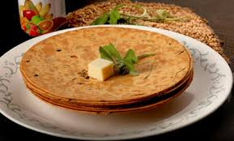

Khakhra

How to make Methi Khakhra Recipe - Gujarati Savory Crispy Flat Bread
To begin making the Gujarati Methi Khakhra Recipe, we will first make the dough. In a large bowl, combine the whole wheat flour, fenugreek leaves, red chilli powder, asafoetida powder, turmeric powder, oil and salt to taste.
Knead by adding little water at a time, till it becomes stiff dough. Cover and let the Khakra dough rest for fifteen minutes and knead again. Divide the dough into twenty equal portions.
Roll out the each ball into very thin circles by dusting on flour as and when required to prevent sticking to the base.
Heat an iron skillet in medium high heat; add one rolled out portion of the Khakra dough. Once you notice a few air pockets popping out flip the rolled dough.
Smear a teaspoon of oil around it and using a wooden press do a press and turn motion not allowing the dough to develop air pockets. Continue this pressing and turning for a few minutes on medium heat.
Flip over continue the press and turn motion on medium heat until the Khakra is completely crisp.
Take the Khakhra off from heat and place it on a flat plate. Continue the same with the other rolled out portions of the Khakra dough and stack the Khakra one on top of the other.
Once the Khakhra is cooled completely store the them in an airtight container. These Khakras stay fresh outside for about two weeks and refrigerated for about a month.
Serve Gujarati Khakhra Recipe along with Jowar Dhani Chivda and Masala Chai for your tea time snacks.